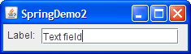
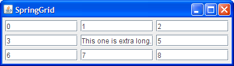
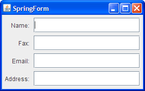

Lección: Disponer Componentes Dentro de un Contenedor
Cómo Usar SpringLayout
Nota: Esta lección cubre la escritura de código de diseño a mano, lo cual puede ser desafiante. Si no está interesado en aprender todos los detalles de la gestión del diseño, preferirá usar el gestor de diseño
GroupLayout combinado con una herramienta de construcción para diseñar su IGU.
Una de tales herramientas de construcción es el
EID NetBeans. De otra manera, si quiere
codificar a mano y no quiere usar GroupLayout, entonces se recomienda GridBagLayout
como el gestor de diseño más flexible y potente.
Si está interesado en usar JavaFX para crear su IGU, vea Trabajar Con Diseños en JavaFX.
La clase
SpringLayout fue añadida en la versión 1.4 del KDJ para soportar el diseño en los
constructores de IGU. SpringLayout es un gestor de diseño muy flexible que puede emular muchas
de las características de otros gestores de diseño.
SpringLayout es, sin embargo, de muy bajo nivel y como tal, sólo debería usarlos con un constructor
de IGU, en vez de intentar codificar un gestor de diseño spring a mano.
Esta sección comienza con un ejemplo simple mostrando todas las cosas que necesita recordar para crear su primer diseño spring ─ ¡y qué ocurre cuando los olvida! Más tarde presentamos métodos de utilidad que le permiten colocar compoentes en un par de tipos diferentes de cuadrículas.
Aquí tiene imágenes de algunos de los diseños que trataremos:


Cómo Funciona el Diseño Spring
Los diseños spring hacen su trabajo definiendo relaciones direccionales, o restricciones, entre los límites de los componentes. Por ejemplo, podría definir que el límite izquierdo de un componente es una distancia fija (5 píxeles, digamos) desde el límite derecho de otro componente.
En un SpringLayout, la posición de cada borde es dependiente de la posición de simplemente otro
borde. Si una restricción es subsecuentemente añadida a crear un nuevo enlace para un borde, el enlace previo
es descartado y el borde sigue dependiendo de un solo borde.
A diferencia de muchos administradores de diseño, SpringLayout no establece automáticamente
la ubicación de los componentes que gestiona. Si usted escribe a mano un IGU que usa SpringLayout,
recuerdo inicializar las ubicaciones del componente restringiendo las ubicaciones oeste/este y norte/sur.
Dependiendo de las restricciones que use, puede también necesitar establecer el tamaño del contenedor
explícitamente.
Los compoentes definen propiedades edge, las cuales están conectadas por instancias
Spring. Cada spring tiene cuatro propiedades ─ sus valores minimum,
preferred, y maximum, y su valor actual. Los springs asociados con cada componente
son recogidos en un objeto SpringLayout.Constraints.
Una instancia de la clase Spring mantiene tres propiedades que caracterizan su comportamiento: los
valores mínimos, preferidos, y máximos. Cada una de estas propiedades puede estar involucrada en la definición
de su cuarta propiedad de valor basada en una serie de reglas.
Una instancia de la clase Spring puede ser visualizada como un muelle mecánico que suministra una
fuerza correctiva a medida que el resorte se comprime o se estira de su valor preferido. Esta fuerza es
modelada como una función lineal de la distancia desde el valor preferido, pero con dos constantes diferentes
-- uno para la fuerza de compresión y uno para el de tensión. Esas constantes se especifican por los valores
mínimo y máximo del spring de modo que un spring en su valor mínimo produce una fuerza igual y opuesta a la que
se crea cuando está en su valor máximo. La diferencia entre los valores preferidos y mínimos, por lo tanto,
representa la facilidad con la que se puede comprimir el spring. La diferencia entre sus valores máximos y
preferidos indica la facilidad con el cual el Spring puede ser extendido.
Basado en esto, un SpringLayout puede ser visualizado como un conjunto de objetos que son
conectados por un conjunto de muelles en sus bordes.
Ejemplo: SpringDemo
Esta sección lo lleva a través de los pasos típicos de especificar las restricciones para un contenedor que usa
SpringLayout. El primer ejemplo,
SpringDemo1.java, es una aplicación extremadamente simple que presenta una etiqueta y un
campo de texto en un panel de contenido controlado por un diseño spring. Aquí tiene el código relevante:
public class SpringDemo1 {
public static void main(String[] args) {
...
Container contentPane = frame.getContentPane();
SpringLayout layout = new SpringLayout();
contentPane.setLayout(layout);
contentPane.add(new JLabel("Label: "));
contentPane.add(new JTextField("Text field", 15));
...
frame.pack();
frame.setVisible(true);
}
}
Pulse el botón Lanzar para ejecutar SpringDemo1 usando Java™ Web Start ( descargue KDJ 7 o posterior). Alternativamente, para compilar y ejecutar el ejemplo usted mismo, consulte el índice de ejemplos.
Así es como se ve la IGU cuando aparece por primera vez:

Esto es lo que parece cuando se redimensiona para ser más grande:
Obviamente, tenemos algunos problemas. No sólo el marco aparece demasiado pequeño, sino que incluso cuando se
cambia de tamaño todos los componentes están en (0,0). Esto ocurre porque no hemos establecido resortes
(springs) especificando las posiciones de los componentes y el ancho del contenedor. Un pequeño consuelo es que
al menos los componentes están en sus tamaños preferidos ─ Lo obtenemos gratis de los resortes
predeterminados creados por SpringLayout para cada componente.
Nuestro próximo ejemplo,
SpringDemo2.java, mejora la situación un poquito especificando las ubicaciones para cada
componente. Pulse el botón Lanzar para ejecutar SpringDemo2 usando
Java™ Web Start
(descargue KDJ 7 o posterior).
Alternativamente, para compilar y ejecutar el ejemplo usted mismo, consulte el
índice de ejemplos.
En este ejemplo, especificaremos que los componentes aparecerán en una fila única, con 5 píxeles entre ellos. El código siguiente especifica la ubicación de la etiqueta:
//Ajuste las restricciones para la etiqueta para que esté en (5,5).
layout.putConstraint(SpringLayout.WEST, label,
5,
SpringLayout.WEST, contentPane);
layout.putConstraint(SpringLayout.NORTH, label,
5,
SpringLayout.NORTH, contentPane);
La primera llamada a putConstraint especifica que el borde izquierdo (oeste) de la etiqueta debe
estar a 5 píxeles del borde izquierdo de su contenedor. Esto se translada a una coordenada x de 5. La
segunda llamada putConstraint configura una relación similar entre los bordes superiores (norte)
de la etiqueta y su contenedor, resultando en una coordenada y de 5.
Aquí está el código que configura la ubicación del campo de texto:
//Ajusta las restricciones para el campo de texto para que esté
//(<borde derecho de la etiqueta> + 5, 5).
layout.putConstraint(SpringLayout.WEST, textField,
5,
SpringLayout.EAST, label);
layout.putConstraint(SpringLayout.NORTH, textField,
5,
SpringLayout.NORTH, contentPane);
La primera llamada a putConstraint hace que que el borde izquierdo del campo de texto (Oeste) esté
a 5 píxeles del borde derecho (este) de la etiqueta. La segunda llamada putConstraint es
simplemente como la lsegunda llamada en el primer esbozo, y tiene el mismo efecto de establecer la coordenada
y a 5.
El ejemplo anterior aún tiene el problema de que el contenedor sea demasiado pequeño. Pero cuando cambiamos el tamaño de la ventana, los componentes se colocan en el lugar correcto:

Para hacer que el contenedor aparezca inicialmente en su tamaño correcto, necesitamos establecer los resortes
(springs) que definen los bordes derechos (este) e inferior (sur) del propio contenedor. No hay restricciones
para los bordes derecho e inferior del contenedor por defecto. El tamaó del contenedor se define estableciendo
estas restricciones.
SpringDemo3.java muestra cómo hacer esto. Pulse el botón Lanzar para ejecutar SpringDemo3
usando
Java™ Web Start
(descargue KDJ 7 o
posterior). Alternativamente, para compilar y ejecutar el ejemplo usted mismo, consulte el
índice de ejemplos.
Aquí está el código que establece los resortes del contenedor:
layout.putConstraint(SpringLayout.EAST, contentPane,
5,
SpringLayout.EAST, textField);
layout.putConstraint(SpringLayout.SOUTH, contentPane,
5,
SpringLayout.SOUTH, textField);
La primera llamada a putConstraint hace que el borde derecho del contenedor esté a 5 píxeles a la
derecha del borde del campo de texto. La segunda hace que el borde inferior esté 5 píxeles más allá del borde
del componente más alto (que, por simplicidad, hemos supuesto que es el campo de texto).
Finalmente, la ventana aparece con el tamaño correcto:

Cuando hacemos la ventana más grande podemos ver el diseño spring en acción, distribuyendo el espacio extra entre los componentes disponibles.

En este caso el diseño Spring ha elegido dar todo el espacio extra al campo de texto. Aunque parezca que el diseño Spring trata a las etiquetas y los campos de texto de forma diferente, el diseño Spring no tiene un conocimiento especial de cualquier componente de Swing o AWT. Se basa en los valores de las propiedades de tamaño mínimo, preferido y máximo de un componente. La siguiente sección describe como el diseño Spring usa estas propiedades, y por qué pueden causar una distribución desigual del espacio.
Springs y Tamaño del Componente
Un objeto SpringLayout automáticamente instala spring (resorte)s para la altura y la
anchura de cada componente que el SpringLayout controla. Estos springs (resortes) son
esencialmente cubiertas para los métodos del componente getMinimumSize,
getPreferredSize, y getMaximumSize. Por "cubiertas" queremos decir que no
sólo son los resortes inicializados con los valores apropiados desde estos métodos, sino que también
los resortes monitorizan estos valores. Por ejemplo, el objeto Spring que representa
el ancho de un componente es una clase especial de resorte que simplemente delega su implementación a los
métodos relevantes de tamaño del componente. De esta forma, el resorte se mantiene sincronizado con los métodos
de tamaño a medida que cambian las características del componente.
Cuando los métodos de un componente getMaximumSize y getPreferredSize devuelven el
mismo valor, SpringLayout interpreta esto como que el componente no debe estirarse.
JLabel y JButton son ejemplos de componentes implementados de esta forma. Por esta
razón, la etiqueta en el ejemplo SpringDemo3 no se estira.
El método getMaximumSize de algunos componentes, tales ocmo JTextField, devuelven el
valor Integer.MAX_VALUE para la anchura y altura de su tamaño máximo, indicando que el componente
puede crecer a cualquier tamaño. Por esta razón, cuando la ventana de SpringDemo3 se agranda,
SpringLayout distribuye todo el espacio extra a los únicos resortes que pueden crecer
─ aquellos que determina el tamaño del campo de texto.
Más Sobre la IPA de SpringLayout
Los ejemplos de SpringDemo que usan el método putConstraint de SpringLayout para
establecer los resortes asociados con cada componente. El método putConstraint es un método de
conveniencia que le permite modificar las restricciones de un componente sin necesidad de usar la IPA completa
del diseño Spring. Aquí, de nuevo, está el código de SpringDemo3 que establece la ubicación de la
etiqueta:
layout.putConstraint(SpringLayout.WEST, label,
5,
SpringLayout.WEST, contentPane);
layout.putConstraint(SpringLayout.NORTH, label,
5,
SpringLayout.NORTH, contentPane);
Aquí tiene el código equivalente que usa las clases SpringLayout.Constraints y Spring
directamente:
SpringLayout.Constraints contentPaneCons =
layout.getConstraints(contentPane);
contentPaneCons.setX(Spring.sum(Spring.constant(5),
contentPaneCons
.getConstraint(SpringLayout.WEST)));
contentPaneCons.setY(Spring.sum(Spring.constant(5),
contentPaneCons
.getConstraint(SpringLayout.NORTH)));
Para ver la demostración entera convertida para usar esta IPA, mire
SpringDemo4.java. Ese fichero también incluye una versión más pulida (y más larga) del
código que establece el tamaño del contenedor. Pulse el botón Lanzar para ejecutar SpringDemo4 usando
Java™ Web Start
(descargue KDJ 7 o posterior)
. Alternativamente, para compilar y ejecutar el ejemplo por usted mismo, consulte el
índice de ejemplos.
Como implican los fragmentos anteriores, SpringLayout y SpringLayout.Constraints
tienden a usar convenciones diferentes para describir los resortes (springs). La IPA de
SpringLayout usa bordes para definir sus restricciones. Los resortes (springs) conectan los bordes
para establecer relaciones lineales entre ellos. Los bordes están definidos por los componentes, usando las
constantes siguientes:
-
SpringLayout.NORTHespecifica el borde superior del rectángulo delimitador de un componente. -
SpringLayout.SOUTHespecifica el borde inferior del rectángulo delimitador de un componente. -
SpringLayout.EASTespecifica el borde derecho del rectángulo delimitador de un componente. -
SpringLayout.WESTespecifica el borde izquierdo del rectángulo delimitador de un componente. -
SpringLayout.BASELINEespecifica la línea base de un componente. -
SpringLayout.HORIZONTAL_CENTERespecifica el centro horizontal del rectángulo delimitador de un componente. -
SpringLayout.VERTICAL_CENTERespecifica el centro vertical del rectángulo delimitador de un componente.
Los bordes difieren de los objetos Spring. La clase SpringLayout.Constraints sabe
acerca de los bordes, pero sólo tiene objetos Spring para las siguientes propiedades:
- x
- y
- width
- height
Cada objeto Constraints mantiene las siguientes relaciones entre sus resortes (springs) y los
bordes que representan:
west = x
north = y
east = x + width
south = y + height
Si está confundido, no se preocupe. La siguiente sección presenta métodos de utilidad que puede usar para realizar algunas tareas de diseño comunes sin saber nada sobre la IPA del diseño Spring.
Métodos de Utilidad para Cuadrículas
Porque la clase SpringLayout fue creada para constructores de IGU, configurar resortes
individuales para un diseño puede ser engorroso de codificar a mano. Esta sección le presenta un par de
métodos que puede usar para instalar todos los resortes necesarios para colocar un grupo de componentes en una
cuadrícula. Estos métodos emulan alguna de las características de las clases
GridLayout, GridBagLayout, y BoxLayout.
Los dos métodos, llamados makeGrid y makeCompactGrid, están definidos en
SpringUtilities.java. Ambos métodos trabajan agrupando los componentes en filas y columnas
y usando el método Spring.max para hacer un resorte de anchura o altura que haga una fila o
columna lo suficientemente grande para todos los componentes en ella. En el método
makeCompactGrid se usa la misma anchura o altura para todos los componentes en una columna o
fila particular, respectivamente. En el método makeGrid, por contraste, los resortes de
anchura y altura son compartidos por cada componente del contenedor, forzando a todos ellos a ser del mismo
tamaño. Además, se suministran métodos factoría por
Spring
para crear diferentes clases de resortes, incluyendo resortes que dependen de otros resortes.
Veamos estos métodos en acción. Nuestro primer ejemplo, implementando en el fichero fuente
SpringGrid.java, muestra un montón de números en campos de texto. El campo de texto del
centro es mucho más ancho que los otros. Al igual que con GridLayout, tener una celda grande
fuerza al resto de celdas a ser igualmente grandes. Pulse el botón Lanzar para ejecutar SpringGrid usando
Java™ Web Start
(descargue KDJ 7 o posterior).
Alternativamente, para compilar y ejecutar el ejemplo usted mismo, consulte el
índice de ejemplos.

Aquí está el código que crea y coloca los campos de texto en SpringGrid:
JPanel panel = new JPanel(new SpringLayout());
for (int i = 0; i < 9; i++) {
JTextField textField = new JTextField(Integer.toString(i));
...//cuando i==4, coloca el texto largo en el campo de texto...
panel.add(textField);
}
...
SpringUtilities.makeGrid(panel,
3, 3, //filas, columnas
5, 5, //X inicial, Y inicial
5, 5);//Relleno x, relleno y
Ahora veamos un ejemplo, en el fichero fuente
SpringCompactGrid.java, que usa el método makeCompactGrid en vez de
makeGrid. Este ejemplo visualiza un montón de números para mostrar la capacidad del diseño
Spring de minimizar el espacio requerido. Pulse el botón Lanzar para ejecutar SpringCompactGrid usando
Java™ Web Start
(descargue KDJ 7 o posterior).
Alternativamente, para compilar y ejecutar el ejemplo usted mismo, consulte el
índice de ejemplos.
Así es como se ve la IGU de SpringCompactGrid:
Aquí tiene el código que crea y coloca los campos de texto en SpringCompactGrid:
JPanel panel = new JPanel(new SpringLayout());
int rows = 10;
int cols = 10;
for (int r = 0; r < rows; r++) {
for (int c = 0; c < cols; c++) {
int anInt = (int) Math.pow(r, c);
JTextField textField =
new JTextField(Integer.toString(anInt));
panel.add(textField);
}
}
//Coloca el panel.
SpringUtilities.makeCompactGrid(panel, //padre
rows, cols,
3, 3, //X inicial, Y inicial
3, 3); //Relleno x, relleno y
Uno de los usos más prácticos para el método makeCompactGrid es asociar etiquetas con componentes,
donde las etiquetas están en una columna y los componentes en la otra. El fichero
SpringForm.java
usa makeCompactGrid de esta forma, como la siguiente figura demuestra.
Pulse el botón Lanzar para ejecutar SpringForm usando Java™ Web Start (descargue KDJ 7 o posterior). Alternativamente, para compilar y ejecutar el ejemplo usted mismo, consulte el índice de ejemplos.
Aquí tiene el código que crea y coloca los pares de etiqueta-campo de texto en SpringForm:
String[] labels = {"Name: ", "Fax: ", "Email: ", "Address: "};
int numPairs = labels.length;
//Crea y llena el panel.
JPanel p = new JPanel(new SpringLayout());
for (int i = 0; i < numPairs; i++) {
JLabel l = new JLabel(labels[i], JLabel.TRAILING);
p.add(l);
JTextField textField = new JTextField(10);
l.setLabelFor(textField);
p.add(textField);
}
//Coloca el panel.
SpringUtilities.makeCompactGrid(p,
numPairs, 2, //filas, columnas
6, 6, //X inicial, Y inicial
6, 6); //Relleno x, Relleno y
Debido a que estamos utilizando un gestor de diseño real en lugar de un posicionamiento absoluto, el gestor de diseño responde dinámicamente a los cambios en los componentes involucrados. Por ejemplo, si los nombre de las etiquetas son traducidos, el diseño Spring produce una configuración que le da a la primera columna más o menos sitio, como se necesite. Y como la siguiente figura muestra, cuando la ventana cambia de tamaño, los componentes de tamaño flexible ─ los campos de texto ─ toman todo el espacio sobrante, mientras que las etiquetas se adhieren a lo que necesitan.

Nuestro último ejemplo del método makeCompactGrid, en
SpringBox.java, muestra algunos botones configurados para ser
colocados en una única fila. Pulse el botón Lanzar para ejecutar SpringBox usando
Java™ Web Start
(descargue KDJ 7 o posterior).
Alternativamente, para compilar y ejecutar el ejemplo usted mismo, consulte el
índice de ejemplos.
Note que el comportamiento es casi idéntico al de BoxLayout en el caslo de una fila única.
Los componentes no solo se colocarán como en BoxLayout, sino que los tamaños mínimo, preferido y
máximo del contenedor que usa el SpringLayout arrojan los mismos resultados que en
BoxLayout se dan. Aquí está la llamada a makeCompactGrid que produce este diseño:
//Coloca los botones en una línea y tantas columnas
//como sean necesarias, con 6 píxeles de relleno alrededor.
SpringUtilities.makeCompactGrid(contentPane, 1,
contentPane.getComponentCount(),
6, 6, 6, 6);
Veamos que ocurre cuando cambiamos el tamaño de esta ventana. Este es un caso especial extraño que vale la pena tomar en cuenta ya que puede toparse con él por accidente en sus primeros diseños.
¡Nada se movío! Esto es porque ninguno de los componentes (botones) o el espaciado entre ellos fue definido para que sea estirable. En este caso el diseño Spring calcula un tamaño máximo para el contenedor padre que es igual a su tamaño preferido, significando que el contenedor padre en sí mismo no es estirable. Tal vez sería menos confuso si el AWT se negara a cambiar el tamaño de una ventana que no fuera extensible, pero no lo hace. El administrador de diseño no puede hacer nada sensato aquí ya que ninguno de los componentes ocupará el espacio requerido. En vez de fallar, simplemente no hace nada, dejando todos los componentes como estaban.
La IPA de SpringLayout
La IPA para usar SpringLayout se distribuye en tres clases:
| Constructor o Método | Propósito |
|---|---|
| SpringLayout() | Crea una instancia de SpringLayout. |
| SpringLayout.Constraints getConstraints(Component) | Obtiene las limitaciones (conjunto de resortes) asociados con el componente especificado. |
| Spring getConstraint(String, Component) |
Obtiene el resorte para un borde de un componente. El primer argumento especifica el borde y debe ser
uno de las siguientes constantes SpringLayout: NORTH, SOUTH,
EAST, o WEST.
|
|
void putConstraint(String, Component, int, String, Component)
void putConstraint(String, Component, Spring, String, Component) |
Métodos de convenencia para definir relaciones entre los bordes de dos componentes. Los dos primeros argumentos especifican el primer componente y su borde afectado. Los dos últimos argumentos especifican el segundo componente y su borde afectado. El tercer argumento especifica el resorte que determina la distancia entre los dos. Cuando el argumento tercero es un entero, un resorte constante se crea para suministrar una distancia fija entre los bordes de los componentes. |
| Constructor o Método | Propósito |
|---|---|
|
SpringLayout.Constraints()
SpringLayout.Constraints(Spring, Spring) SpringLayout.Constraints(Spring, Spring, Spring, Spring) |
Crea una instancia de SpringLayout.Constraints. Los dos primeros argumentos, si están
presentes, especifican los resortes X e Y, respectivamente. Los dos argumentos segundos, si están
presentes, especifican las alturas y anchuras de los resortes, respectivamente. Omitir un argumento
causa que el resorte correspondiente sea null, que SpringLayout generalmente
reemplaza con los valores predeterminados adecuados.
|
|
Spring getConstraint(String)
Spring getHeight() Spring getWidth() Spring getX() Spring getY() void setConstraint(String, Spring) void setHeight(Spring) void setWidth(Spring) void setX(Spring) void setY(Spring) |
Establece u obtiene el resorte especificado. El argumento de cadena a los métodos
getConstraint y setConstraint especifican un nombre de borde, y debe ser una
de las constantes SpringLayout NORTH, SOUTH, EAST,
o WEST.
|
| Método | Propósito |
|---|---|
|
static Spring constant(int)
static Spring constant(int, int, int) |
Crea un resorte que no monitoriza los tamaños de un componente. La versión de tres argumentos crea un
resorte con sus valores mínimos, preferidos y máximos establecidos a los valores especificados, en ese
orden. La versión de un-argumento crea un resorte con los valores mínimos, preferidos, y máximos todos
establecidos al entero especificado.
A pesar del nombre, los resortes devueltos por |
|
static Spring sum(Spring, Spring)
static Spring max(Spring, Spring) static Spring minus(Spring) |
Crea un resorte que es el resultado de alguna manipulación matemática. El método sum
añade dos resortes. El método max devuelve un resorte cuyo valor es siempre mayor que o
igual que los valores de los dos argumentos. El método minus devuelve un resorte con la
dirección opuesta a la del argumento. El método minus puede ser usada para crear un
argumento para el método sum, permitiéndole obtener la diferencia entre dos resortes.
|
|
int getMinimumValue()
int getPreferredValue() int getMaximumValue() |
Obtiene el valor correspondiente del resorte. Para un resorte creado-por-SpringLayout que
automáticamente monitoriza un componente, estos métodos resultan en llamadas a los métodos
getXxxSize correspondientes en el componente.
|
|
int getValue()
setValue(int) |
Obtiene o establece el valor actual del resorte. |
Ejemplos que Usan SpringLayout
La tabla siguiente lista algunos ejemplos que usan el diseño Spring.
| Ejemplo | Dónde Se Describe | Notas |
|---|---|---|
SpringDemo3
|
Esta página |
Usa SpringLayout para crear una fila de componentes de tamaño natural espaciados
uniformemente.
|
SpringDemo4
|
Esta página |
Reimplementa SpringDemo3 para usar SpringLayout.Constraints y Spring
directamente.
|
SpringGrid
|
Esta página |
Use SpringLayout y el método de utilidad makeGrid para crear un diseño donde
todos los componentes son del mismo tamaño.
|
SpringCompactGrid
|
Esta página |
Usa SpringLayout y el método de utilidad makeCompactGrid para crear un diseño
donde todos los componentes en una fila tienen la misma altura, y todos los componentes en una columna
tienen el mismo ancho.
|
SpringForm
|
Esta página |
Usa SpringLayout y makeCompactGrid para alinear pares de etiquetas-campos de
texto.
|
SpringBox
|
Esta página |
Usa SpringLayout y makeCompactGrid para demostrar la colocación de una fila
única de componentes, y que ocurre cuando ningún resorte puede crecer.
|
SpinnerDemo
|
Cómo Usar Contadores Numéricos |
Usa SpringLayout y makeCompactGrid para colocar filas de pares etiqueta-contador
numérico.
|
TextInputDemo
|
Cómo Usar Campos de Texto Formateado |
Usa SpringLayout y makeCompactGrid para colocar filas de componentes
etiquetados. Los componentes son una mezcla de campos de texto, campos de texto formateados, y
contadores numéricos.
|